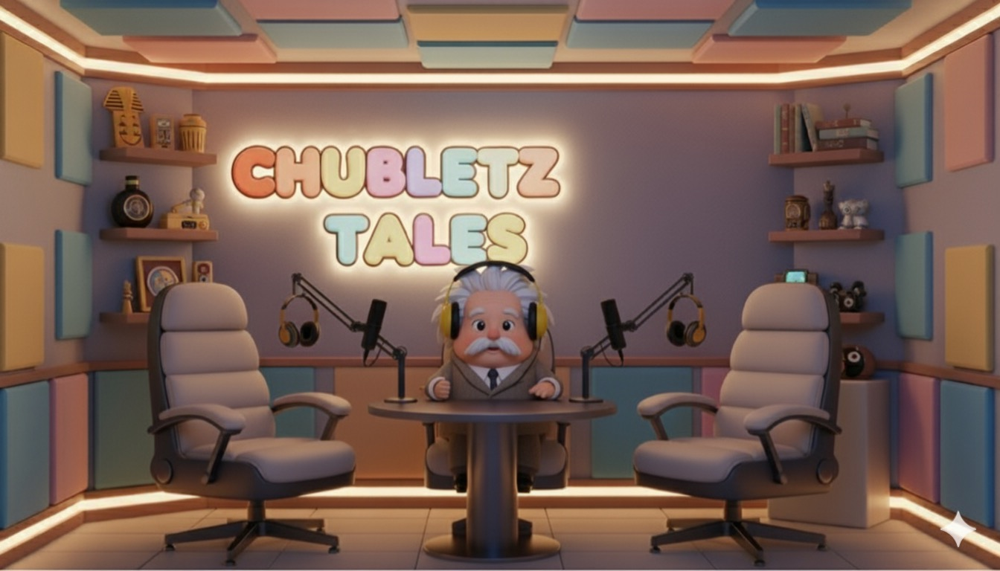
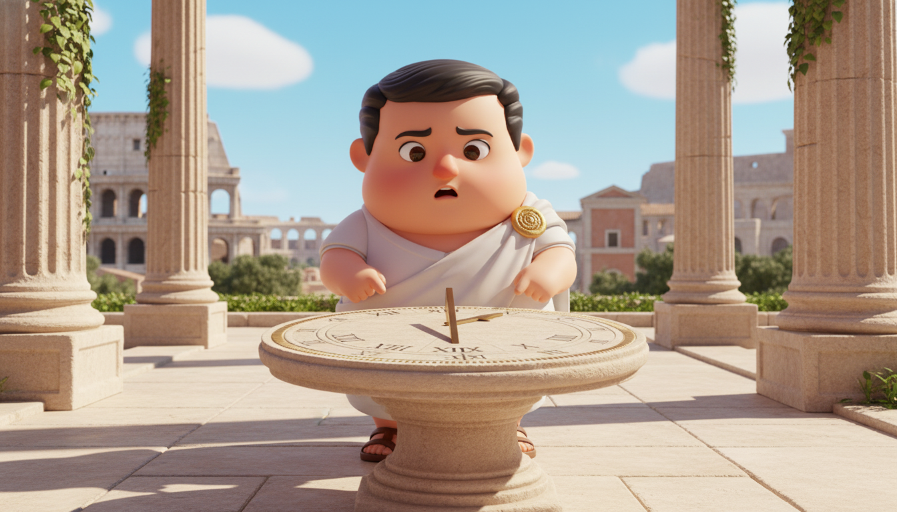
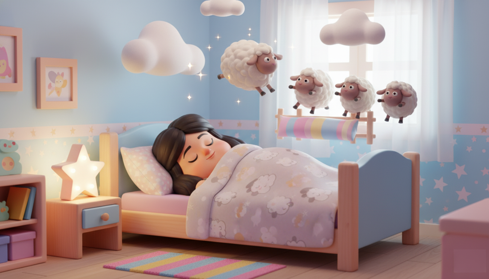
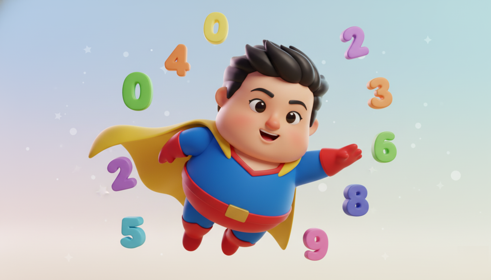
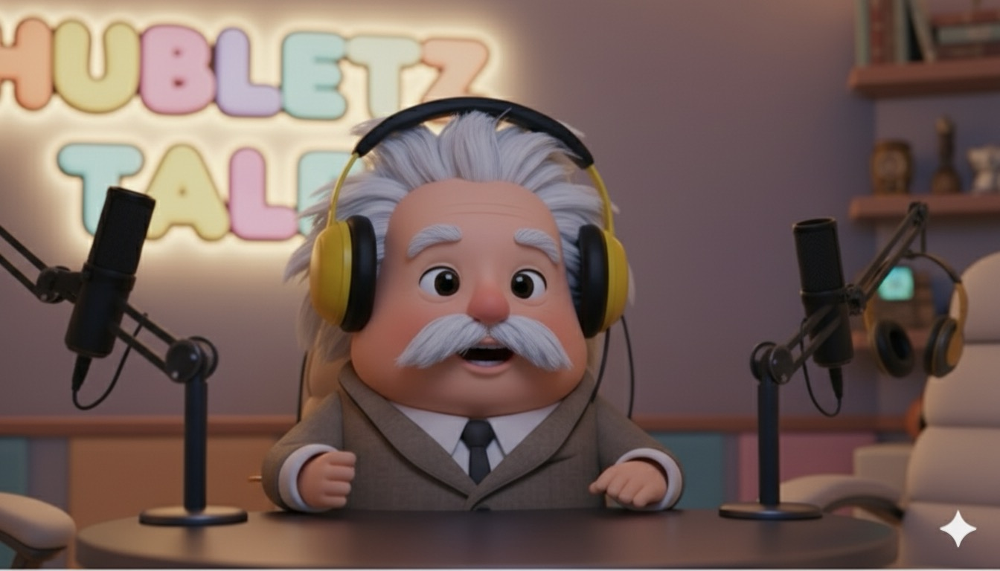
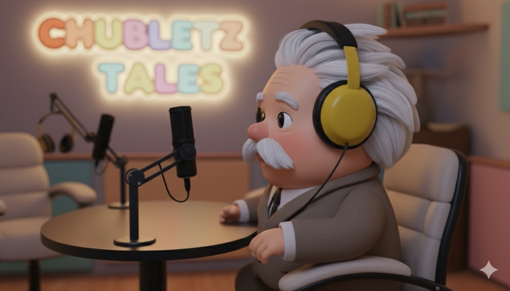

One spreadsheet, one agent: how Claude Code produced an animated podcast
A Pixar-style Albert Einstein hosting a podcast about the story of numbers — every shot planned in a spreadsheet, every row generated by an AI agent. The production system built for the educational channel Chubletz Tales.

Watch on YouTube ↗
A production studio that fits in a spreadsheet
The whole episode lives in one sheet: each row is a shot — dialogue, image prompt, camera direction, status, output. Claude Code reads the rows, drives the generators, and fills in the results.
Chubletz Tales: history, told by its heroes
Chubletz teaches kids through Pixar-style animated episodes in which historical figures tell their own stories. This episode: Albert Einstein, in his podcast studio, on the story of numbers — from Roman numerals to zero.

The set — Einstein's studio
Story scene — Rome
Story scene — counting sheep
Story scene — hero zeroFive steps, one loop
The World
Nano Banana generated the cast and sets — Einstein in his studio, ancient Rome, the story scenes — with the same character held consistent across shots. Early takes used only a front camera and felt flat; the fix was treating it like real cinematography: front, side, three-quarter and full-view setups for every scene.
Nano Banana · images
Front · piece to camera
Side profileThe Shot List
The heart of the system: a spreadsheet where every row is a shot. Dialogue, the image to animate, the video prompt, aspect ratio, camera direction — and a status column that doubles as the render queue.
One row = one shot| id | dialogue | camera | status | output |
|---|---|---|---|---|
| 01 | "Ah, hello my curious friends! I'm Albert — today, the story of numbers!" | front, fixed | DONE | shot_01.mp4 |
| 02 | "Long before calculators, the Romans carved their numbers in stone…" | full view | DONE | shot_02.mp4 |
| 03 | "But something was missing. A hero called… zero!" | ¾ push-in | DONE | shot_03.mp4 |
| 04 | "Zero traveled from India, through Arabia, into every equation…" | side profile | RUNNING | — |
The Motion
Veo animated each still into a clip — Einstein speaking to camera, story scenes coming alive — following the camera direction written in its row.
Veo · image-to-videoThe Voice
ElevenLabs gave Einstein his voice, coordinated with the animation so speech and performance stay in step — each shot's dialogue generated from the same row that drives its visuals.
ElevenLabs · voiceThe Orchestrator
Claude Code runs the floor: it reads the sheet, dispatches image, motion and voice generation for every pending row, tracks status, retries failures, and collects the outputs — turning a spreadsheet into a running production line.
Claude Code · agent▸ reading shot list… 24 rows, 3 pending
▸ row 04 · generating motion (side profile)… done
▸ row 04 · voice line synced… done
▸ status updated → DONE · output linked
▸ 2 rows remaining
What the process taught
The first pass used only front-facing shots — technically fine, visually lifeless. Re-planning every scene with front, side, ¾ and full-view setups is what made the episode feel directed rather than generated.
Keeping dialogue, prompts, camera notes and status in one sheet meant the agent always knew what to do next — and a failed generation was just a row whose status never flipped to done. Rerun, don't rebuild.
The same Einstein across dozens of shots doesn't happen by accident — it takes reference images and prompt discipline on every single row. Character drift is the tax on skipping that.
Everything used, and what it did
Character & scene image generation
Image-to-video animation per shot
Einstein's voice, per-row dialogue
The orchestrator — reads rows, runs the pipeline
Everything on GitHub — site, design system, video code
The complete source for this project — the case-study pages, the design system, the Remotion video code and the asset pipeline — is open at github.com/adcunico/prompt-atelier.